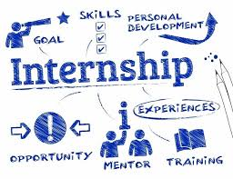

Future Plans
Devoloping new projects
Before furthering my self into the computer sciecne field professionally I firstly want to create bigger and more impressive programs using multiple different programming languages such as C++.

Getting Internships
Before I graduate and start looking for a full feldged job, I want to take this time in my life and I am hoping to get a internship sometime in the near future. Getting a internship will help me develop my skills as an employ and help me gain work experience before graduating.
Graduating
As my program is 4 years long, I am hoping to graduate in 4 years instead of delaying and graduating in 5 years since I don't want to waste any time when it comes to my future.
Finding a job
As soon as I graduate I am hoping to get a job as quick as possible or even already have a job set up before I graduate.